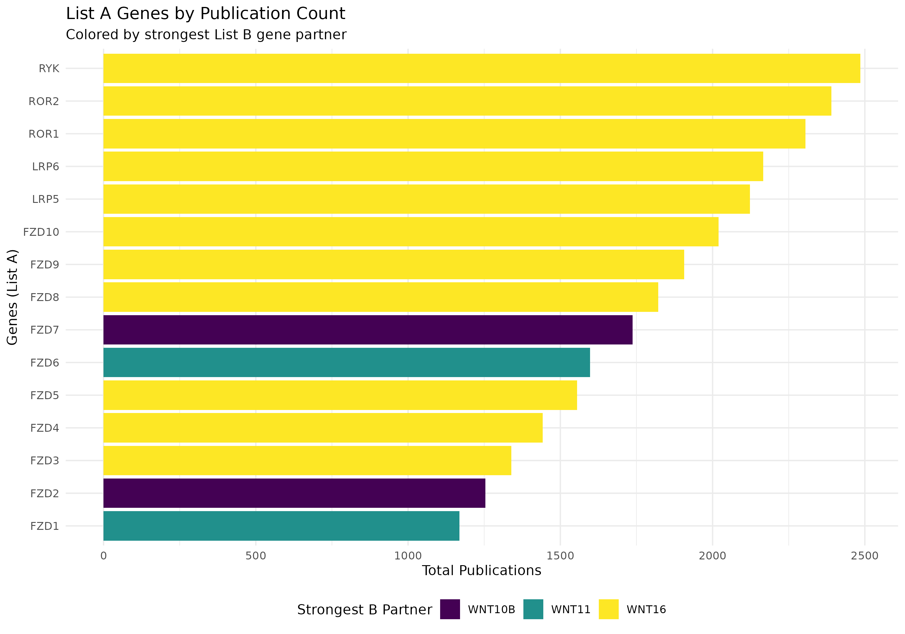
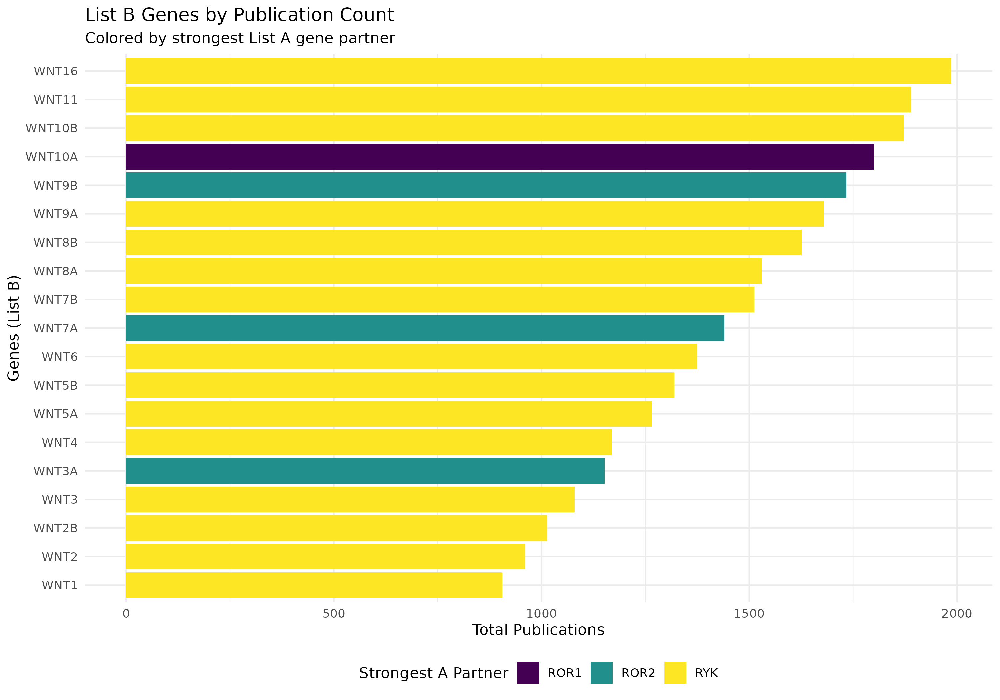
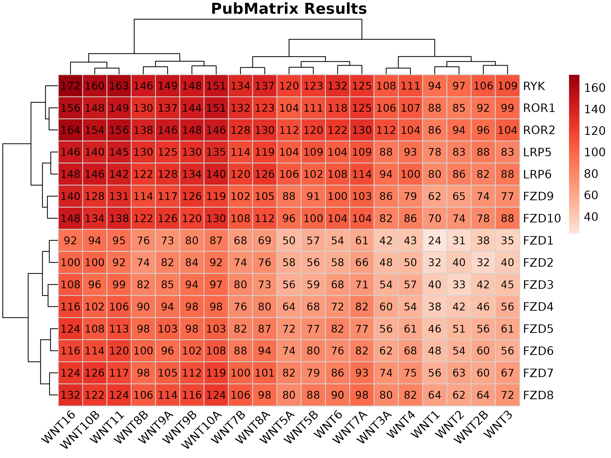

PubMatrixR with Ligand Receptors
A comprehensive guide to analyzing publication relationships
ToledoEM
2026-11-08
Source:vignettes/WntExample.Rmd
WntExample.Rmd
Introduction
WNT ligands and their receptors do not pair off neatly. A given ligand can bind several receptors, and the literature reflects that: some ligand-receptor combinations turn up in paper after paper, others almost never.
This vignette counts those co-occurrences. It compares 19 WNT ligands against 15 receptors (FZD1-10, LRP5/6, ROR1/2, RYK), which gives a 15x19 grid of PubMed counts. Bear in mind what the numbers actually measure: how often two gene symbols appear in the same record, not whether the paper found them to interact.
library(PubMatrixR)
library(knitr)
library(kableExtra)
library(dplyr)
library(pheatmap)
library(ggplot2)
A <- c(
"WNT1", "WNT2", "WNT2B", "WNT3", "WNT3A", "WNT4", "WNT5A", "WNT5B",
"WNT6", "WNT7A", "WNT7B", "WNT8A", "WNT8B", "WNT9A", "WNT9B",
"WNT10A", "WNT10B", "WNT11", "WNT16"
)
B <- c(
"FZD1", "FZD2", "FZD3", "FZD4", "FZD5", "FZD6", "FZD7",
"FZD8", "FZD9", "FZD10", "LRP5", "LRP6", "ROR1", "ROR2", "RYK"
)Running the search
A grid this size is 285 separate PubMed searches. With an API key that takes about half a minute; without one, closer to two. The vignette skips the live call by default and fills in a synthetic matrix, so the page builds whether or not NCBI is reachable. Every number below is fake. Swap in your own gene lists and run the live version to get real ones.
NCBI API Key (Recommended)
For better performance and higher rate limits, we recommend obtaining an NCBI API key:
- Without API key: 3 requests per second
- With API key: 10 requests per second
To obtain your free NCBI API key, visit: https://support.nlm.nih.gov/kbArticle/?pn=KA-05317
Once you have your API key, pass it to PubMatrix() like
this:
result <- PubMatrix(
A = A,
B = B,
API.key = "your_api_key_here",
Database = "pubmed"
)For live rendering, this vignette picks up the key from the
NCBI_API_KEY environment variable instead of hardcoding it,
so no key is stored in the file:
current_year <- as.integer(format(Sys.Date(), "%Y"))
result <- PubMatrix(
A = A,
B = B,
API.key = ncbi_api_key,
Database = "pubmed",
daterange = c(1990, current_year),
outfile = "pubmatrix_result"
)Which genes get the most attention
Before looking at pairs, check the totals. These bar charts sum each gene’s row or column and colour it by its strongest partner on the other list, so you can see which receptor dominates a given ligand’s literature and the other way round.
# Create data frame for List A genes (rows) colored by List B genes (columns)
a_genes_data <- data.frame(
gene = rownames(result),
total_pubs = rowSums(result),
stringsAsFactors = FALSE
)
# Add color coding based on max overlap with B genes
a_genes_data$max_b_gene <- apply(result, 1, function(x) colnames(result)[which.max(x)])
a_genes_data$max_overlap <- apply(result, 1, max)
# Create data frame for List B genes (columns) colored by List A genes (rows)
b_genes_data <- data.frame(
gene = colnames(result),
total_pubs = colSums(result),
stringsAsFactors = FALSE
)
# Add color coding based on max overlap with A genes
b_genes_data$max_a_gene <- apply(result, 2, function(x) rownames(result)[which.max(x)])
b_genes_data$max_overlap <- apply(result, 2, max)
# Plot A genes colored by their strongest B gene partner
p1 <- ggplot(a_genes_data, aes(x = reorder(gene, total_pubs), y = total_pubs, fill = max_b_gene)) +
geom_bar(stat = "identity") +
coord_flip() +
labs(
title = "List A Genes by Publication Count",
subtitle = "Colored by strongest List B gene partner",
x = "Genes (List A)",
y = "Total Publications",
fill = "Strongest B Partner"
) +
theme_minimal() +
theme(legend.position = "bottom") +
scale_fill_viridis_d()
# Plot B genes colored by their strongest A gene partner
p2 <- ggplot(b_genes_data, aes(x = reorder(gene, total_pubs), y = total_pubs, fill = max_a_gene)) +
geom_bar(stat = "identity") +
coord_flip() +
labs(
title = "List B Genes by Publication Count",
subtitle = "Colored by strongest List A gene partner",
x = "Genes (List B)",
y = "Total Publications",
fill = "Strongest A Partner"
) +
theme_minimal() +
theme(legend.position = "bottom") +
scale_fill_viridis_d()
print(p1)
print(p2)
The full matrix
Raw PubMed publication counts for every ligand-receptor pair. Rows are FZD/LRP/ROR/RYK receptors, columns are WNT ligands.
kable(result,
caption = "Co-occurrence Matrix: WNT Genes (Publication Counts)",
align = "c",
format = if (knitr::pandoc_to() == "html") "html" else "markdown"
) %>%
kableExtra::kable_styling(
bootstrap_options = c("striped", "hover", "condensed"),
full_width = FALSE,
position = "center"
) %>%
kableExtra::add_header_above(c(" " = 1, "Wnt Genes" = length(A)))| WNT1 | WNT2 | WNT2B | WNT3 | WNT3A | WNT4 | WNT5A | WNT5B | WNT6 | WNT7A | WNT7B | WNT8A | WNT8B | WNT9A | WNT9B | WNT10A | WNT10B | WNT11 | WNT16 | |
|---|---|---|---|---|---|---|---|---|---|---|---|---|---|---|---|---|---|---|---|
| FZD1 | 24 | 31 | 38 | 35 | 42 | 43 | 50 | 57 | 54 | 61 | 68 | 69 | 76 | 73 | 80 | 87 | 94 | 95 | 92 |
| FZD2 | 32 | 40 | 32 | 40 | 48 | 50 | 58 | 56 | 58 | 66 | 74 | 76 | 74 | 82 | 84 | 92 | 100 | 92 | 100 |
| FZD3 | 40 | 33 | 42 | 45 | 54 | 57 | 56 | 59 | 68 | 71 | 80 | 73 | 82 | 85 | 94 | 97 | 96 | 99 | 108 |
| FZD4 | 38 | 42 | 46 | 56 | 60 | 54 | 64 | 68 | 72 | 82 | 76 | 80 | 90 | 94 | 98 | 98 | 102 | 106 | 116 |
| FZD5 | 46 | 51 | 56 | 61 | 56 | 61 | 72 | 77 | 82 | 77 | 82 | 87 | 98 | 103 | 98 | 103 | 108 | 113 | 124 |
| FZD6 | 48 | 54 | 60 | 56 | 62 | 68 | 74 | 80 | 76 | 82 | 88 | 94 | 100 | 96 | 102 | 108 | 114 | 120 | 116 |
| FZD7 | 56 | 63 | 60 | 67 | 74 | 75 | 82 | 79 | 86 | 93 | 100 | 101 | 98 | 105 | 112 | 119 | 126 | 117 | 124 |
| FZD8 | 64 | 62 | 64 | 72 | 80 | 82 | 80 | 88 | 90 | 98 | 106 | 98 | 106 | 114 | 116 | 124 | 122 | 124 | 132 |
| FZD9 | 62 | 65 | 74 | 77 | 86 | 79 | 88 | 91 | 100 | 103 | 102 | 105 | 114 | 117 | 126 | 119 | 128 | 131 | 140 |
| FZD10 | 70 | 74 | 78 | 88 | 82 | 86 | 96 | 100 | 104 | 104 | 108 | 112 | 122 | 126 | 120 | 130 | 134 | 138 | 148 |
| LRP5 | 78 | 83 | 88 | 83 | 88 | 93 | 104 | 109 | 104 | 109 | 114 | 119 | 130 | 125 | 130 | 135 | 140 | 145 | 146 |
| LRP6 | 80 | 86 | 82 | 88 | 94 | 100 | 106 | 102 | 108 | 114 | 120 | 126 | 122 | 128 | 134 | 140 | 146 | 142 | 148 |
| ROR1 | 88 | 85 | 92 | 99 | 106 | 107 | 104 | 111 | 118 | 125 | 132 | 123 | 130 | 137 | 144 | 151 | 148 | 149 | 156 |
| ROR2 | 86 | 94 | 96 | 104 | 112 | 104 | 112 | 120 | 122 | 130 | 128 | 130 | 138 | 146 | 148 | 146 | 154 | 156 | 164 |
| RYK | 94 | 97 | 106 | 109 | 108 | 111 | 120 | 123 | 132 | 125 | 134 | 137 | 146 | 149 | 148 | 151 | 160 | 163 | 172 |
Heatmaps
Nobody reads a 15x19 table of numbers. The heatmap shows the same
data as colour, and show_numbers = TRUE keeps the counts in
the cells if you still want them.
plot_pubmatrix_heatmap(
matrix = result,
title = "WNT - Ligands v/s Receptors",
show_numbers = TRUE
)Dropping the numbers makes the pattern easier to see when you care about the shape rather than the exact counts.
pubmatrix_heatmap(matrix = result)
System Information
## R version 4.6.2 (2026-10-29)
## Platform: x86_64-pc-linux-gnu
## Running under: Ubuntu 24.04.5 LTS
##
## Matrix products: default
## BLAS: /usr/lib/x86_64-linux-gnu/openblas-pthread/libblas.so.3
## LAPACK: /usr/lib/x86_64-linux-gnu/openblas-pthread/libopenblasp-r0.3.26.so; LAPACK version 3.12.0
##
## locale:
## [1] LC_CTYPE=C.UTF-8 LC_NUMERIC=C LC_TIME=C.UTF-8
## [4] LC_COLLATE=C.UTF-8 LC_MONETARY=C.UTF-8 LC_MESSAGES=C.UTF-8
## [7] LC_PAPER=C.UTF-8 LC_NAME=C LC_ADDRESS=C
## [10] LC_TELEPHONE=C LC_MEASUREMENT=C.UTF-8 LC_IDENTIFICATION=C
##
## time zone: UTC
## tzcode source: system (glibc)
##
## attached base packages:
## [1] stats graphics grDevices utils datasets methods base
##
## other attached packages:
## [1] ggplot2_4.0.3 pheatmap_1.0.13 dplyr_1.2.1 kableExtra_1.4.1
## [5] knitr_1.52 PubMatrixR_1.0.1
##
## loaded via a namespace (and not attached):
## [1] sass_0.4.10 generics_0.1.4 xml2_1.6.0 stringi_1.8.9
## [5] digest_0.6.39 magrittr_2.0.5 evaluate_1.0.5 grid_4.6.2
## [9] RColorBrewer_1.1-3 fastmap_1.2.0 jsonlite_2.0.0 viridisLite_0.4.3
## [13] scales_1.4.0 pbapply_1.7-5 textshaping_1.0.5 jquerylib_0.1.4
## [17] cli_3.6.6 rlang_1.3.0 withr_3.0.3 cachem_1.1.0
## [21] yaml_2.3.12 otel_0.3.0 tools_4.6.2 parallel_4.6.2
## [25] readODS_2.3.6 vctrs_0.7.3 R6_2.6.1 lifecycle_1.0.5
## [29] stringr_1.6.0 fs_2.1.0 ragg_1.5.2 pkgconfig_2.0.3
## [33] desc_1.4.3 pkgdown_2.2.1 bslib_0.12.0 pillar_1.11.1
## [37] gtable_0.3.6 glue_1.8.1 systemfonts_1.3.2 xfun_0.62
## [41] tibble_3.3.1 tidyselect_1.2.1 rstudioapi_0.19.0 farver_2.1.2
## [45] htmltools_0.5.9 rmarkdown_2.32 svglite_2.2.2 labeling_0.4.3
## [49] compiler_4.6.2 S7_0.2.2